Une lecture des effets qui reviennent dans les édits social-first aujourd'hui.
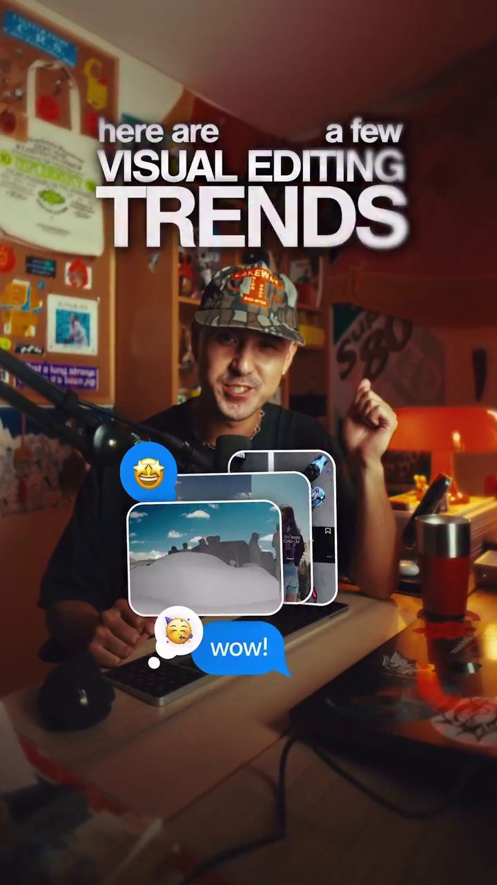
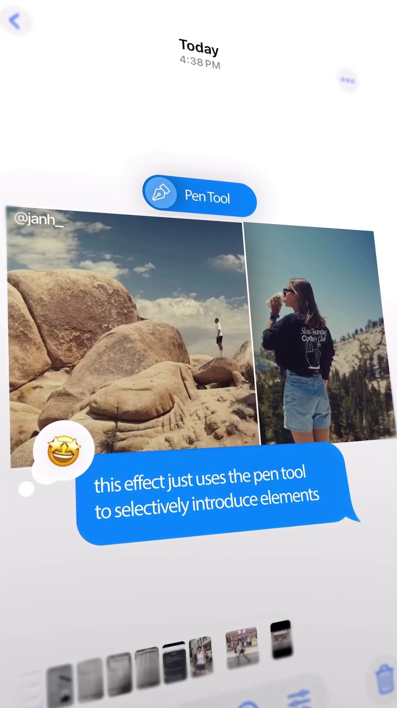
Mot par mot ou phrase par phrase, synchronisés sur la voix. Variations de taille, de couleur, de position selon l'accent du discours. Apparitions punchées, disparitions cleans. Plus une lecture passive : un appui visuel sur ce qui est dit.
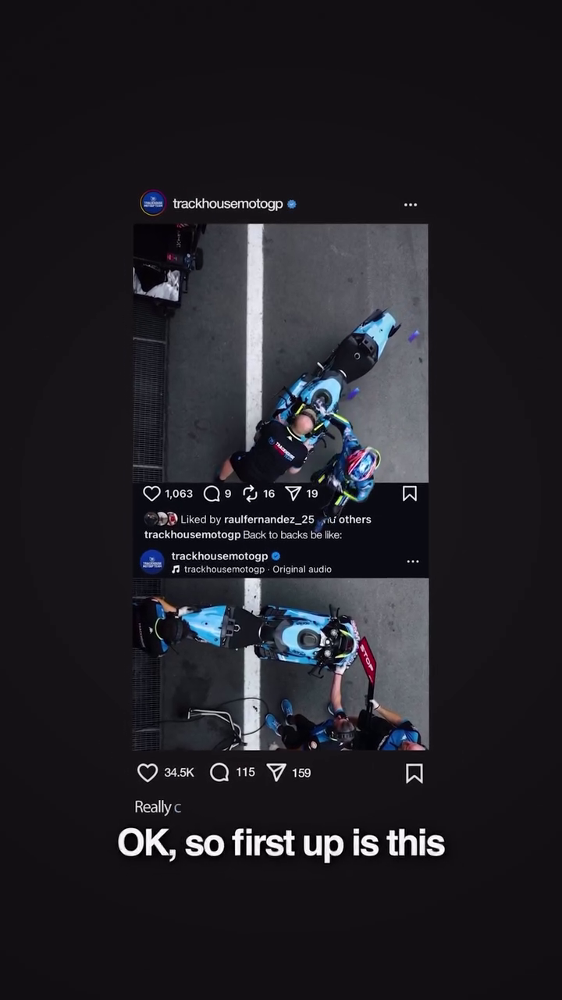
Rotoscopie image par image (ou via Roto Brush / outils IA) pour isoler le sujet du fond. Permet de faire passer du texte ou un élément graphique entre les deux, de remplacer l'arrière-plan, ou de créer un raccord avec le plan suivant.
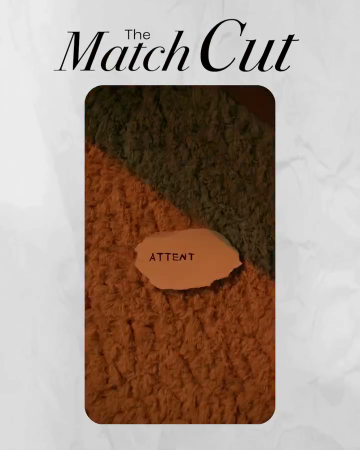
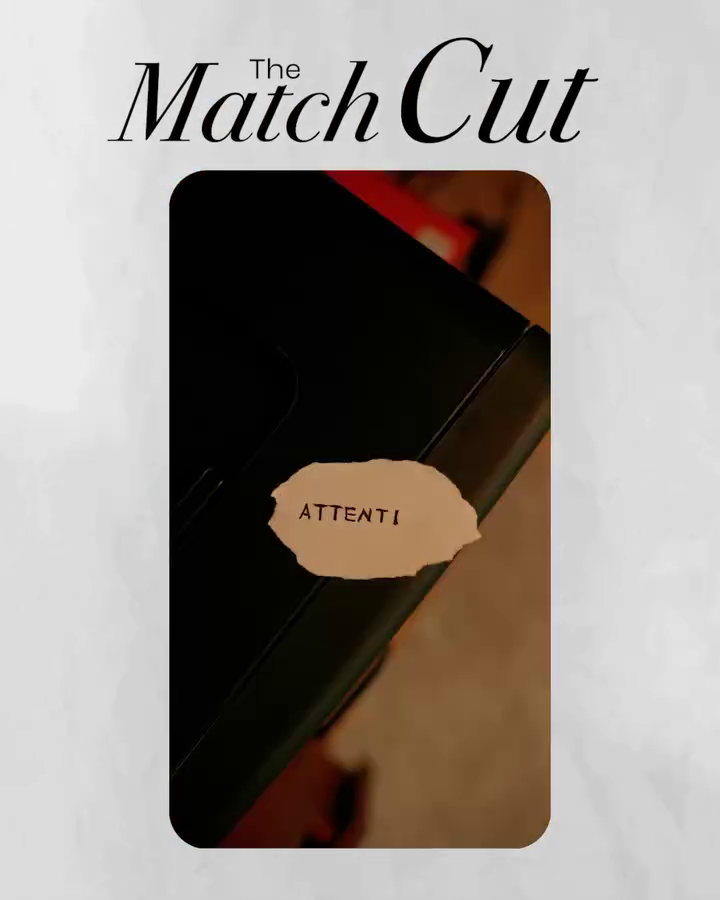
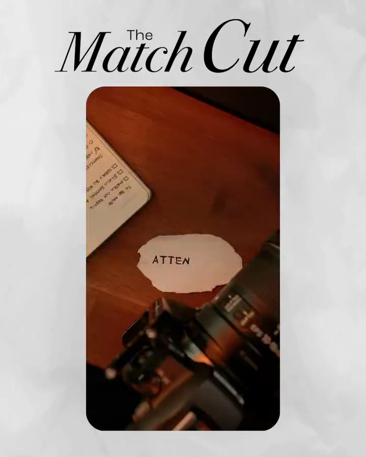
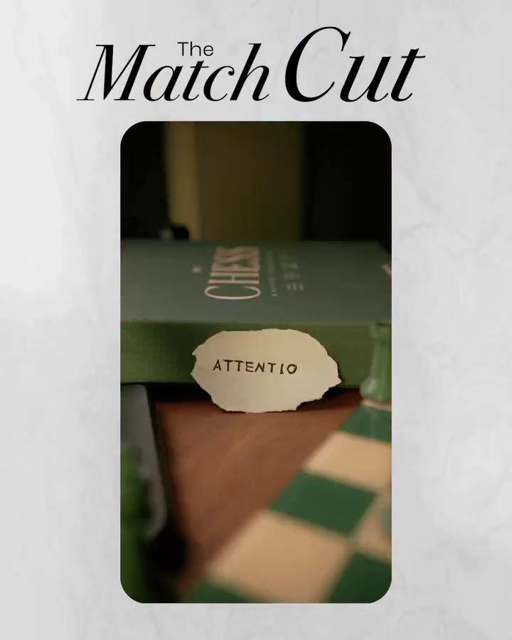
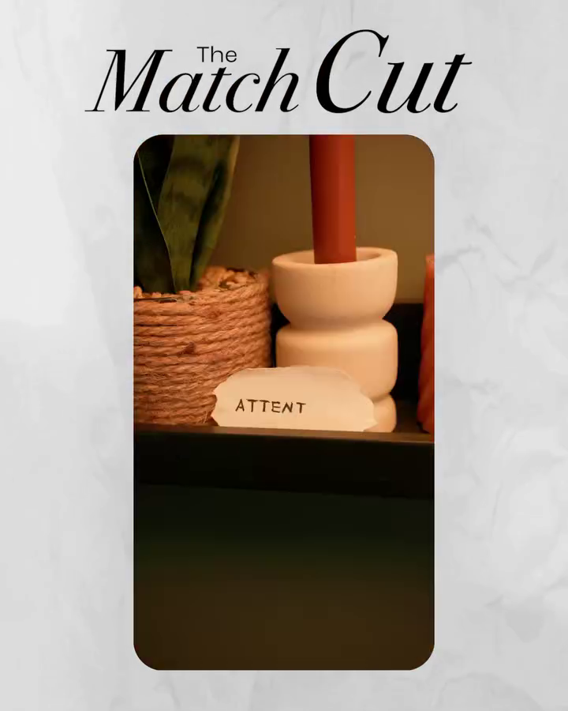
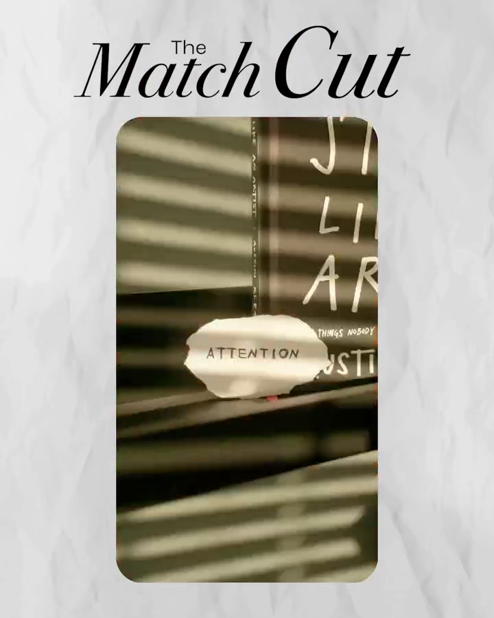
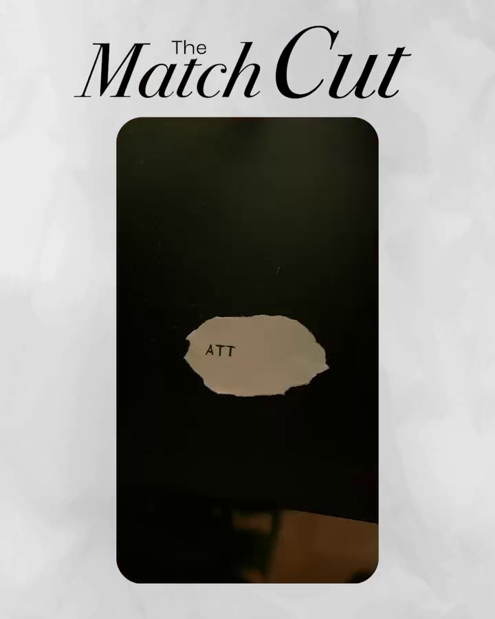
Coupe entre deux plans alignée sur un élément visuel commun : une forme, un geste, une direction de mouvement, une couleur dominante. Le cerveau lit la continuité avant de voir le changement de contexte.
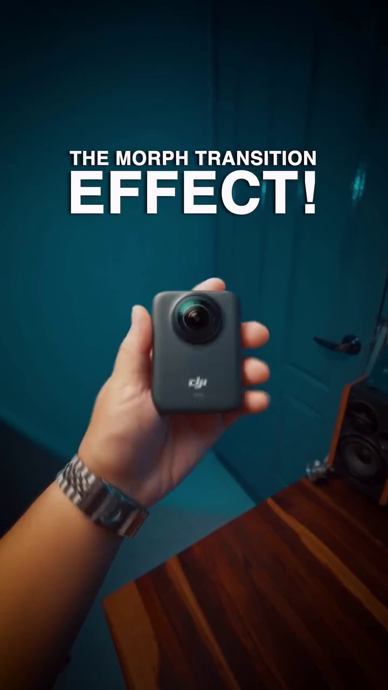
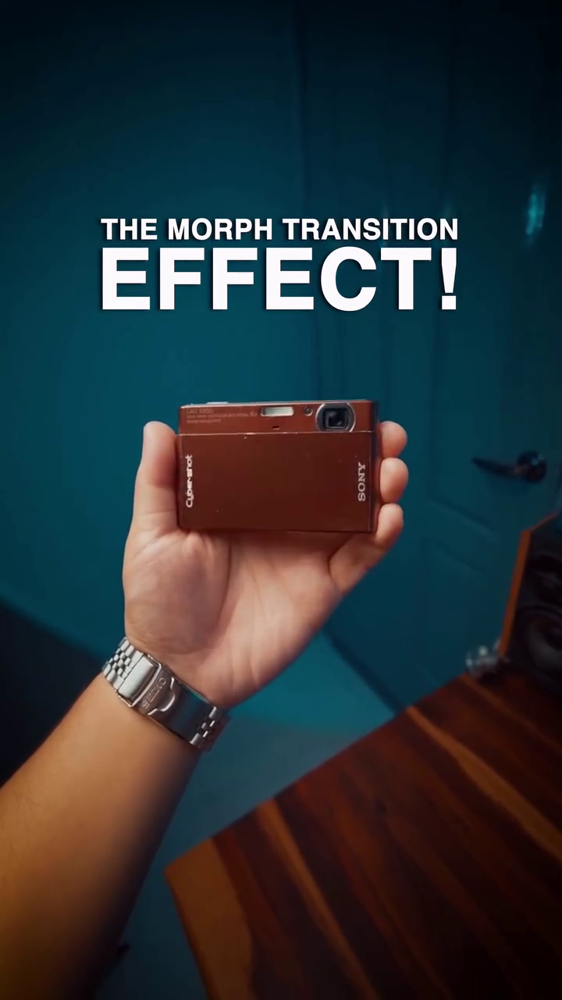
Les outils IA (Runway, Kling, Luma) ouvrent des transitions impossibles à monter avant : morph fluide d'un objet à un autre, apparition / disparition générée d'éléments, transformation progressive du décor. Plus une coupe entre deux plans : un effet qui se construit dans l'image.
15 ans d'expérience, profil touche-à-tout (edit, motion, color, sound, IA, code). Je n'attends pas qu'on me donne des directives : je propose, je solutionne, je livre. À l'aise en petite équipe, c'est mon environnement par défaut.
Je sais combien de temps prend une vidéo. Je peux proposer des idées alignées avec le brief en tenant compte du volume et de la quantité demandés, parce que j'ai pratiqué toutes les phases de production, du shoot au livrable. Pas de promesse irréaliste.
Curieux par défaut. La veille social-first et IA fait partie de ma routine, pas un effort. Confiant de suivre les trends et de proposer ce qui les fait tourner.